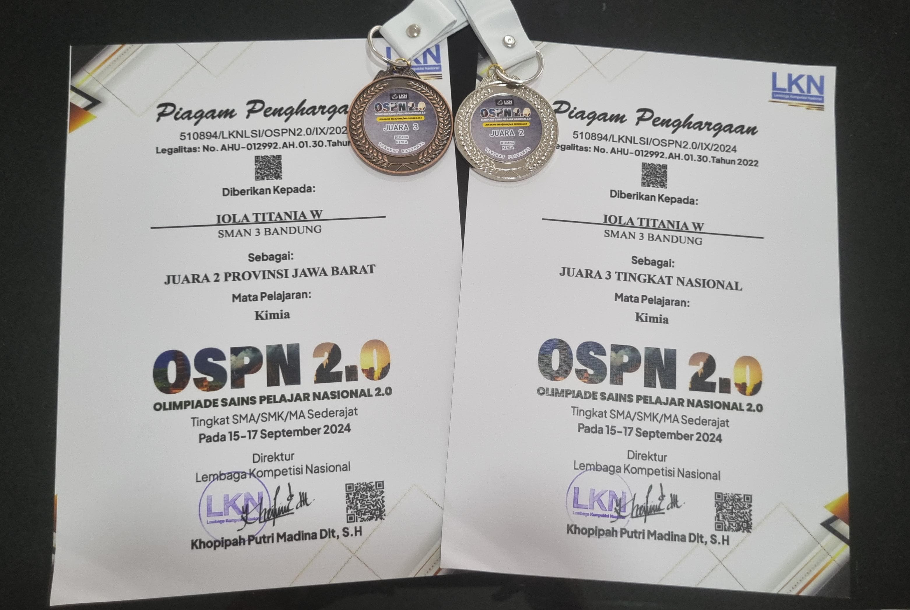

Akademik & Non Akademik
OSPN 2.0
Nekoma High School dengan bangga mengumumkan prestasi luar biasa siswa-siswinya yang berhasil meraih juara dalam Olimpiade Sains dan Pengetahuan Nasional (OSPN) 2.0. Kemenangan ini merupakan hasil dari kerja keras dan dedikasi salah satu siswa dalam mempersiapkan diri menghadapi kompetisi.